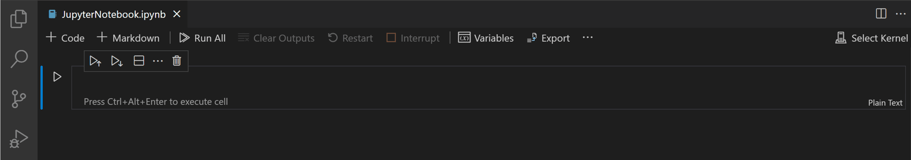
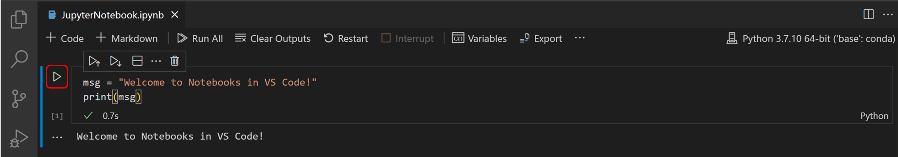
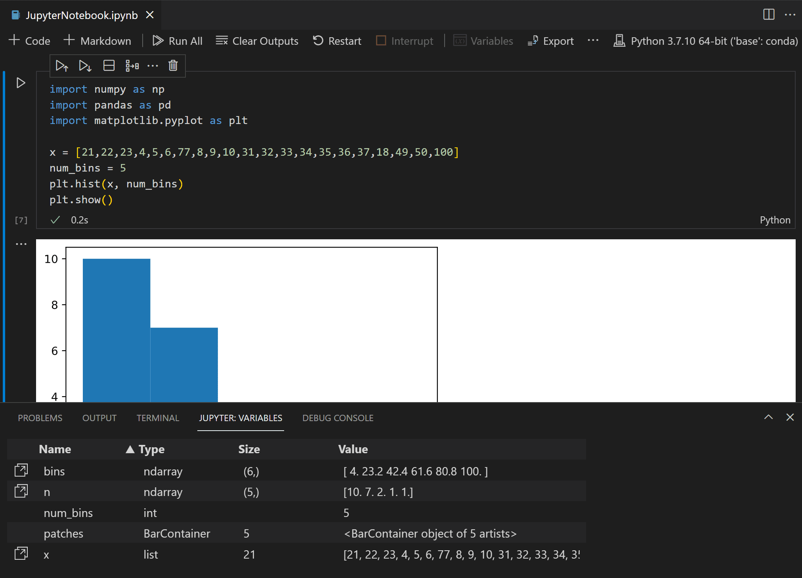
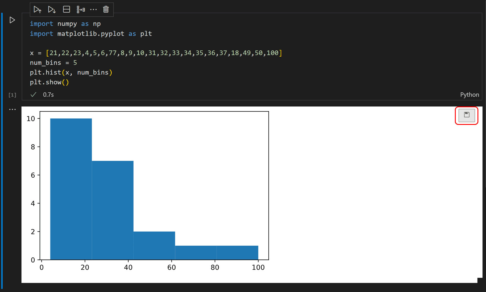

Jupyter Notebooks in VS Code#
Jupyter (formerly IPython Notebook) is an open-source project that lets you easily combine Markdown text and executable Python source code on one canvas called a notebook. Visual Studio Code supports working with Jupyter Notebooks natively, and through Python code files. This topic covers the native support available for Jupyter Notebooks and demonstrates how to:
Create, open, and save Jupyter Notebooks
Work with Jupyter code cells
View, inspect, and filter variables using the Variable Explorer and Data Viewer
Connect to a remote Jupyter server
Debug a Jupyter Notebook
Setting up your environment#
To work with Python in Jupyter Notebooks, you must activate an Anaconda environment in VS Code, or another Python environment in which you’ve installed the Jupyter package. To select an environment, use the Python: Select Interpreter command from the Command Palette (Ctrl+Shift+P).
Once the appropriate environment is activated, you can create and open a Jupyter Notebook, connect to a remote Jupyter server for running code cells, and export a Jupyter Notebook as a Python file.
Create or open a Jupyter Notebook#
You can create a Jupyter Notebook by running the Create: New Jupyter Notebook command from the Command Palette (Ctrl+Shift+P) or by creating a new .ipynb file in your workspace.

Next, select a kernel using the kernel picker in the top right.

After selecting a kernel, the language picker located in the bottom right of each code cell will automatically update to the language supported by the kernel.

If you have an existing Jupyter Notebook, you can open it by right-clicking on the file and opening with VS Code, or through the VS Code File Explorer.
Running cells#
Once you have a notebook, you can run a code cell using the Run icon to the left of the cell and the output will appear directly below the code cell.
To run code, you can also use keyboard shortcuts in both command and edit mode. To run the current cell, use Ctrl+Enter. To run the current cell and advance to the next, use Shift+Enter.

You can run multiple cells by selecting Run All, Run All Above, or Run All Below.
Save your Jupyter Notebook#
You can save your Jupyter Notebook using the keyboard shortcut Ctrl+S or File > Save.
Export your Jupyter Notebook#
You can export a Jupyter Notebook as a Python file (.py), a PDF, or an HTML file. To export, select the Export action on the main toolbar. You’ll then be presented with a dropdown of file format options.

Note: For PDF export, you must have TeX installed. If you don’t, you will be notified that you need to install it when you select the PDF option. Also, be aware that if you have SVG-only output in your Notebook, they will not be displayed in the PDF. To have SVG graphics in a PDF, either ensure that your output includes a non-SVG image format or else you can first export to HTML and then save as PDF using your browser.
Work with code cells in the Notebook Editor#
The Notebook Editor makes it easy to create, edit, and run code cells within your Jupyter Notebook.
Create a code cell#
By default, a blank notebook will have an empty code cell for you to start with and an existing notebook will place one at the bottom. Add your code to the empty code cell to get started.
msg = "Hello world"
print(msg)
msg = "Hello world"
print(msg)
Hello world
Code cell modes#
While working with code cells, a cell can be in three states: unselected, command mode, and edit mode. A vertical bar to the left of a code cell and editor border shows the current state of a cell. When no bar is visible, the cell is unselected. When a cell is selected, it can be in command mode or in edit mode.

In command mode, a solid vertical bar will appear to the left of the cell. The cell can be operated on and accepts keyboard commands.

In edit mode, a solid vertical bar is joined by a border around the cell editor. The cell’s contents (code or Markdown) can be modified.

To switch modes, you can use your keyboard or mouse. On your keyboard, press the Enter key to move to edit mode or the Esc key to move to command mode. With your mouse, click the vertical bar to the left of the cell or out of the code/Markdown region in the code cell.
Add additional code cells#
You can add code cells using the main toolbar, a cell’s add cell toolbar (visible with hover), and through keyboard commands.
To add a new cell below the currently selected cell, use the plus icon in the main toolbar or a cell’s hover toolbar.
When a code cell is in command mode, use the A key to add a cell above and the B key to add a cell below the selected cell.
Select a code cell#
You can change a selected code cell using the mouse or the up/down arrow keys on the keyboard. When a code cell is in command mode, you can also use the J key (down) and K key (up).
Select multiple code cells#
To select multiple cells, start with one cell in selected mode. A filled background indicates selected cells. To select consecutive cells, hold down the Shift key and click the last cell you want to select. To select any group of cells, hold down the Ctrl key and click the cells you’d like to add to your selection.

Run a single code cell#
Once your code is added, you can run a cell using the Run icon to the left of the cell and the output will be displayed below the code cell.

To run a selected code cell, you can also use keyboard shortcuts in both command and edit mode. Ctrl+Enter runs the currently selected cell. Shift+Enter runs the currently selected cell and inserts a new cell immediately below (focus moves to new cell). Alt+Enter runs the currently selected cell and inserts a new cell immediately below (focus remains on current cell).
Run multiple code cells#
Running multiple code cells can be accomplished in many ways. You can use the double arrow in the main toolbar of the Notebook Editor to run all cells within the Notebook or the Run icons with directional arrows in the cell toolbar to run all cells above or below the current code cell.
Move a code cell#
You can move cells up or down within a notebook via dragging and dropping. For code cells, the drag and drop area is to the left of the cell editor as indicated below. For rendered Markdown cells, you may click anywhere to drag and drop cells.
To move multiple cells, you can use the same drag and drop areas in any cell included in the selection.
The keyboard shortcut Alt+Arrow also moves one or multiple selected cells.
Delete a code cell#
To delete code, you can use the Delete icon in the code cell toolbar. When the selected code cell is in command mode, you can use the keyboard shortcut dd.

Undo your last change#
You can use the z key to undo your previous change, for example, if you’ve made an accidental edit, you can undo it to the previous correct state, or if you’ve deleted a cell accidentally, you can recover it.
Switch between code and Markdown#
The Notebook Editor allows you to easily change code cells between Markdown and code. Selecting the language picker in the bottom right of a cell will allow you to switch between Markdown and, if applicable, any other language supported by the selected kernel.
You can also use the keyboard to change the cell type. When a cell is selected and in command mode, the M key switches the cell type to Markdown and the Y key switches the cell type to code.
Once Markdown is set, you can enter Markdown formatted content to the code cell.
Clear output or restart/interrupt the kernel#
If you’d like to clear all code cell outputs or restart/interrupt the kernel, you can accomplish that using the main Notebook Editor toolbar.
Enable/disable line numbers#
When you are in command mode, you can enable or disable line numbering within a single code cell by using the L key.

To toggle line numbering for the entire notebook, use Shift+L when in command mode on any cell.
Table of Contents#
To navigate through your notebook, open the File Explorer in the Activity bar. Then open the Outline tab in the Side bar.
Note: By default, the outline will only show Markdown. To show code cells, enable the following setting: Notebook > Outline: Show Code Cells.
Variable Explorer and Data Viewer#
Within a Python Notebook, it’s possible to view, inspect, sort, and filter the variables within your current Jupyter session. By selecting the Variables icon in the main toolbar after running code and cells, you’ll see a list of the current variables, which will automatically update as variables are used in code. The variables pane will open at the bottom of the notebook.


Data Viewer#
For additional information about your variables, you can also double-click a row or use the Show variable in data viewer button next to the variable for a more detailed view of a variable in the Data Viewer.

Filtering rows#
Filtering rows in the data viewer can be done by typing in the textbox at the top of each column. Type a string you want to search for and any row that has that string in the column will be found:

If you want to find an exact match, prefix your filter with ‘=’:
More complex filtering can be done by typing a regular expression:
Saving plots#
To save a plot from your notebook, simply hover over the output and select the Save icon in the top right.

Note: There is support for rendering plots created with matplotlib and Altair.
Custom notebook diffing#
Under the hood, Jupyter Notebooks are JSON files. The segments in a JSON file are rendered as cells that are comprised of three components: input, output, and metadata. Comparing changes made in a notebook using lined-based diffing is difficult and hard to parse. The rich diffing editor for notebooks allows you to easily see changes for each component of a cell.
You can even customize what types of changes you want displayed within your diffing view. In the top right, select the overflow menu item in the toolbar to customize what cell components you want included. Input differences will always be shown.

To learn more about Git integration within VS Code, visit Source Control in VS Code.
Run by Line#
Run by Line lets you execute a cell one line at a time, without being distracted by other VS Code debug features. To start, select the Run by Line button in the cell toolbar:

Use the same button to advance by one statement. You can select the cell Stop button to stop early, or the Continue button in the toolbar to continue running to the end of the cell.
Debug Cell#
If you want to use the full set of debugging features supported in VS Code, such as breakpoints and the ability to step in to other cells and modules, you can use the full VS Code debugger.
Start by setting any breakpoints you need by clicking in the left margin of a notebook cell.
Then select the Debug Cell button in the menu next to the Run button. This will run the cell in a debug session, and will pause on your breakpoints in any code that runs, even if it is in a different cell or a
.pyfile.You can use the Debug view, Debug Console, and all the buttons in the Debug Toolbar as you normally would in VS Code.
Search through notebook#
You can search through a notebook (or parts of it by filtering the search options) by using the keyboard shortcut Ctrl/Cmd + F. Click the Filter option (funnel icon) to search across:
Markdown cell input (Markdown Source)
Markdown cell output (Rendered Markdown)
Code cell input (Code Cell Source)
Code cell output (Cell Output)
Notebook searches are filtered cell inputs only by default.

Connect to a remote Jupyter server#
You can offload intensive computation in a Jupyter Notebook to other computers by connecting to a remote Jupyter server. Once connected, code cells run on the remote server rather than the local computer.
To connect to a remote Jupyter server:
Open the Kernel Picker button on the top right-hand side of the notebook (or run the Notebook: Select Notebook Kernel command from the Command Palette).

Select the Existing Jupyter Server option to connect to an existing Jupyter server.
To connect to an existing server for the first time, select Enter the URL of the running Jupyter server.

When prompted to Enter the URL of the running Jupyter server, provide the server’s URI (hostname) with the authentication token included with a
?token=URL parameter. (If you start the server in the VS Code terminal with an authentication token enabled, the URL with the token typically appears in the terminal output from where you can copy it.) Alternatively, you can specify a username and password after providing the URI.
Note: For added security, Microsoft recommends configuring your Jupyter server with security precautions such as SSL and token support. This helps ensure that requests sent to the Jupyter server are authenticated and connections to the remote server are encrypted. For guidance about securing a notebook server, refer to the Jupyter documentation.